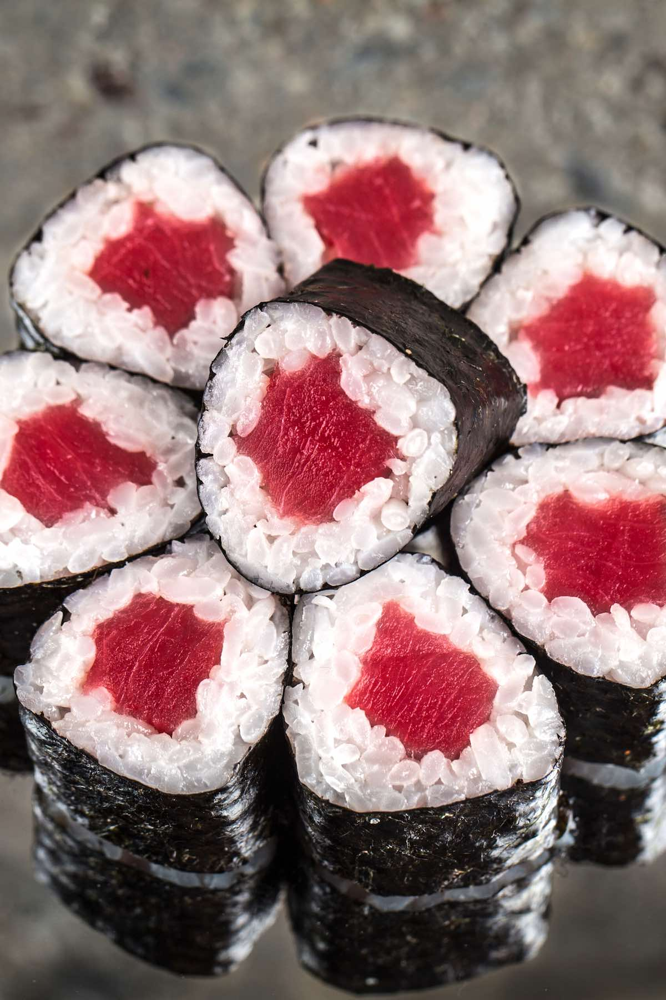

Tuna Maki Roll

Tuna Maki Roll, also called Tekka is a simple and delicios sushi roll.
Ingrediants
- Sushi Grade Tuna
- Nori
- Sushi Rice
- Wasabi
- Soy Sauce
- Bowl of water
Instructions
- Wet your hands in the bowl of water before picking up the rice.
- Spread sushi rice out on Nori, rough side up.
- Sprinkle sesame seeds on top of the rice.
- Smear Wasabi horizontally along rice.
- Lay the Tuna down.
- Roll the nori over itself with a maki mat.
- Slice the sushi into eight pieces.
- Dip the maki roll into the soy sauce, and enjoy.